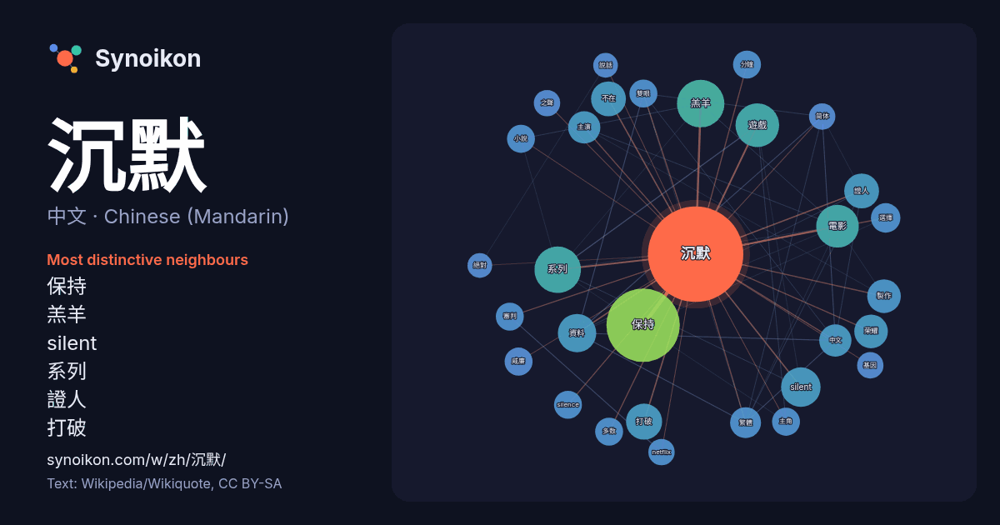

中文 · Chinese (Mandarin) · word of the day list
沉默
“silence” · The words found around it in 772 instances from Chinese (Mandarin) Wikipedia, Wikiquote.

Most distinctive neighbours
- 保持 42×
- 羔羊 27×
- silent 19×
- 系列 15×
- 證人 15×
- 打破 14×
- 不在 14×
- 荣耀 14×
- 資料 13×
- 遊戲 12×
- 繁體 12×
- 主演 11×
- 電影 11×
- silence 9.9×
- 雙眼 9.8×
- 中文 9.6×
- 審判 9.4×
- 简体 8.9×
- netflix 8.9×
- 之聲 8.9×
× = how many times more often than in general Chinese (Mandarin) Wikipedia text.
Most frequent neighbours
- 保持 62
- 羔羊 26
- 系列 25
- 遊戲 22
- 電影 21
- silent 18
- 資料 17
- 打破 15
- 不在 14
- 證人 14
- 荣耀 13
- 製作 13
- 中文 12
- 主演 12
- 故事 11
- 繁體 11
- 香港 11
- 作品 10
- 电影 10
- 設計 10
In context
- 沉默（法語：Silence）是缺乏聽得見聲音，或者是存在感非常低的聲音。「沉默」這個詞語也可以指缺乏任何溝通或聽覺，包括言語及音樂以外所接觸的媒體，以此類推。 沉默也可以用作總體的通訊，可參考非語言溝通和精神聯繫。沉默也可指出任何人在室內或者有範圍的區域沒發出發音。比如在儀式中，沉默是許多文化場面的重要因素。 Wikipedia snippets · 沉默
- 《沉默的羔羊》（英語：The Silence of the Lambs，新加坡公映時譯《迷离谋杀》），是於1991年上映的美國犯罪心理驚悚片，導演為強納森·德米。內容改編自托马斯·哈里斯於1988年的同名小說，描述一名聯邦調查局實習女探員捕捉一名連環殺手的經過。 Wikipedia snippets · 沉默的羔羊
- 《沉默的荣耀》是2025年中国大陆历史谍战题材电视剧，基于中共在台隐蔽战线历史，以吴石、朱枫、陈宝仓、聂曦等人的真实经历为背景创作而成。本片由爱奇艺、慈文传媒製作，2024年1月于福建省厦门市鼓浪屿开机，导演杨亚洲，主演于和伟、魏晨、吴越、曾黎、余皑磊、傅程鵬。2025年9月30日在中国中央电视台电 Wikipedia snippets · 沉默的荣耀
- 《沉默之丘：隕落小鎮》（日語：サイレントヒル タウンフォール）是Screen Burn（英语：Screen Burn (company)）開發、科樂美和安納布爾納互動共同發行的生存恐怖遊戲，為《沉默之丘系列》外传作品。本作背景設置在1996年的蘇格蘭，預定於2026年在Microsoft Windows、PlayStat … Wikipedia snippets · 沉默之丘：隕落小鎮
- Silent解散。第五作《寂静岭：起源》、第六作《寂静岭：歸鄉》、第七作《沉默之丘：驟雨》則分別交由Climax Studios、Double Helix Games、Vatra Games（英语：Vatra Games）製作。一代的重构版《沉默之丘：破碎記憶》由Climax Studios製作并於2009年12月發行。二代的重制版《寂静岭2 Wikipedia snippets · 寂静岭系列
- 《沉默的審判》（英語：Confessions）是一部台灣影集，由香港導演黃精甫執導，《周處除三害》原班人馬阮經天、王淨、賈靜雯、薛仕凌、宋芸樺、陳以文、張孝全等主演。本劇以暴力復仇為主題，描述一場橫跨20年的恩怨情仇，探討人性深淵與集體潛意識中的仇恨蔓延。 故事背景始於2004年的台北，一起突如其來 Wikipedia snippets · 沉默的審判
- 《沉默》（英語：Silence）是一部2016年國際合拍的史詩時代電影，由馬丁·史柯西斯執導，改編自日本作家遠藤周作於1966年出版的同名小說，由安德魯·加菲爾德、亞當·崔佛、連恩·尼遜、窪塚洋介、淺野忠信、希朗·漢德主演。 《沉默》的電影前期製作階段經歷了超過二十年的耽擱和重新斟酌。在2013年 Wikipedia snippets · 沉默 (電影)
- 的同名小說。本片為《1987大懸案》的翻拍，是《沉默的羔羊》同系列小說之第一部改編而成。本片由布萊特·拉特納執導，艾德華·諾頓、安東尼·霍普金斯領銜主演，描述殺人狂醫師漢尼拔·萊克特在遇上FBI探員克麗絲·史達琳前的故事。本片是《沉默的羔羊》及《沉默的殺機》的前傳。 1980年，年輕的FBI探員威爾·葛拉漢（英语：Will Wikipedia snippets · 紅龍
More Chinese (Mandarin) words
Precomputed on 2026-10-09 with default settings (±5 words, medium corpus). The interactive map can refresh it with live data.